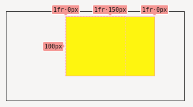
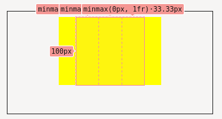

Blog / Expanding CSS grid column workaround
TLDR; Use minmax(0, 1fr) in your grid-template-columns styles to prevent the expansion of grid columns.
The problem
When a child of a grid element expands past the fractional width of its containing columns, the columns expand to match the width of the child element.
Why’s that a problem?
Sometimes it’s desirable for child of a grid to expand past the constraints of the grid, a common case is a full-width image within the body of an article. The article body will have a max-width to prevent the line-length growing too large but the image needs to expand past that max-width to the edges of the viewport with a width of 100vw.
Grids with fractional column widths expand to the width of the child element when the child has a specified width, in this case the 100vw width image expands the column to match 100vw resulting in the image extending beyond the viewpoint and causing overflow scrolling.
Exploring the issue
Below you can see an example of the issue. The parent container has a max-width of 100px and a three column grid with each column having a width of 1fr or 33.33px.
A child element is positioned in the central column 2/3 and has a width larger than the containing element’s max-width.
<div id="parent">
<div id="child"></div>
</div>#parent {
grid-template-columns: repeat(3, 1fr);
width: 100px;
}
#child {
grid-column: 2/3;
width: 150px;
}The first and last columns collapse to 0 while the central column expands to match the width of the child element.

The solution
To prevent the parent grid columns growing past their original equal 1fr widths a constraint is needed in the form of the minmax function. By setting a columns to have a width minmax(0, 1fr) ensures they will grow in width to a maximum of 1fr and no more, preventing the expansion issue.
#parent {
grid-template-columns: repeat(3, minmax(0, 1fr));
}
Addendum
The grid column behaviour documented about has been standard in Firefox for while now but only recently appeared in Chrome due to a change in version 93 which is catching some people off-guard. There is a Chromium bug ticket tracking the issue and a solution is currently being investigated (as of 2021/09/13).